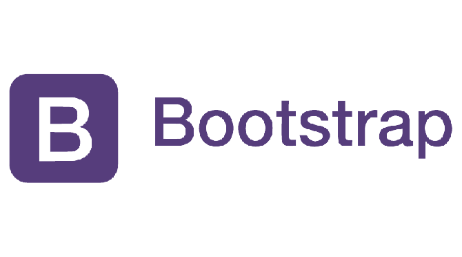
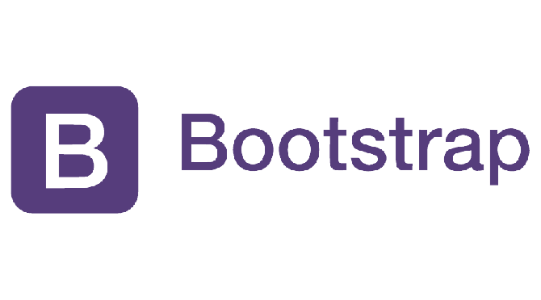
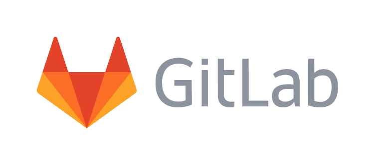
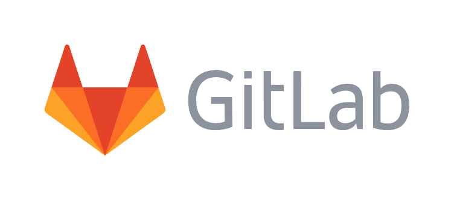
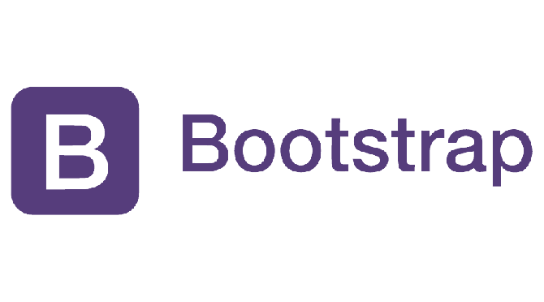
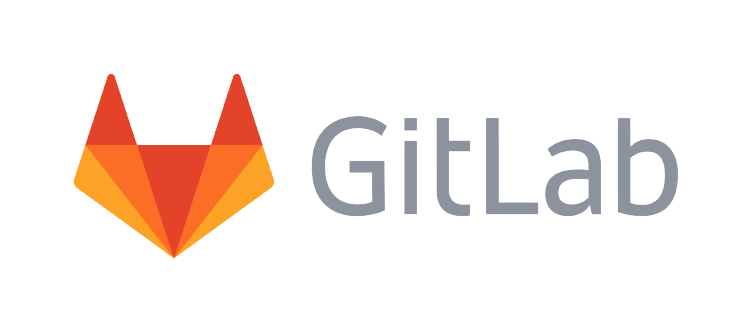

Conhecimentos técnicos:


 


 

Olá!
Eu me chamo
Mateus Kienzle
Eu sou desenvolvedor front e back-end jr.
Um pouco sobre mim:
Como desenvolvedor júnior, busco conhecimentos e experiências que possam agregar no meu crescimento
pessoal e profissional, sempre visando adquirir o máximo de informações possível.
Acredito que a mudança parte, antes de mais nada, de nós, seres humanos. E, quando utilizamos a
tecnologia para agregar esse processo, o resultado pode ser impactante e transformador.
Se conseguirmos aproximar a sociedade da tecnologia, de forma ética e responsável,
nosso desenvolvimento será exponencial.
Sendo assim, tenho convicção de que o estudo é fundamental para nos desenvolvermos como profissionais e
seres humanos mais capacitados e empáticos. Isso é primordial para que possamos dar continuidade
ao desenvolvimento do meio, de forma coletiva e pensando na acessibilidade do restante da sociedade.
Alguns dos meus projetos:
Esse projeto tem o objetivo de criar um documento de cadatro de desenvolvedores de
uma empresa fictícia, com o intuito de estabelecer um controle interno de devs que
trabalham na instiutuição.
A ideia é o desenvolvedor preencher o cadastro conforme suas especialidades
e experiências, informando suas habilidades.
Esse projeto foi realizado como um treinamento para criação de páginas web. Por meio da utilização
de HTML5 e CSS3, essa página foi desenvolvida para abordar a linha do tempo da vida do Dr. Borlaug.
Esse foi um dos projetos de conclusão do curso de Responsive Web Desgin, feito na plataforma freeCodeCamp.
Conhecimentos técnicos:


Experiências profissionais:
Já tive algumas experiências profissionais na área da TI, como: suporte técnico, auxílio na
infraestrutura da empresa, análise de redes de computadores e servidores, manutenção de
desktops e notebooks, auxílio a sistemas de controle de versionamento. Essas experiências
me possibilitaram um grande aprendizado e me fizeram ter certeza de que estou indo no caminho
certo dos meus objetivos.
Além de experiências na área da TI, já trabalhei como assistente comercial em uma
empresa que comercializava produtos industriais. Nessa ocasião, tive a oportunidade de
desenvolver minha capacidade de trabalhar e ter um ótimo relacionamento com outros colegas e
com os clientes. Foi uma fase de grande aprendizado, em que adquiri soft skills
que carrego comigo até hoje, como facilidade em se relacionar com outras pessoas, ótima comunicação
e proatividade para resolver problemas, buscando entender o que preciso para superar os desafios.